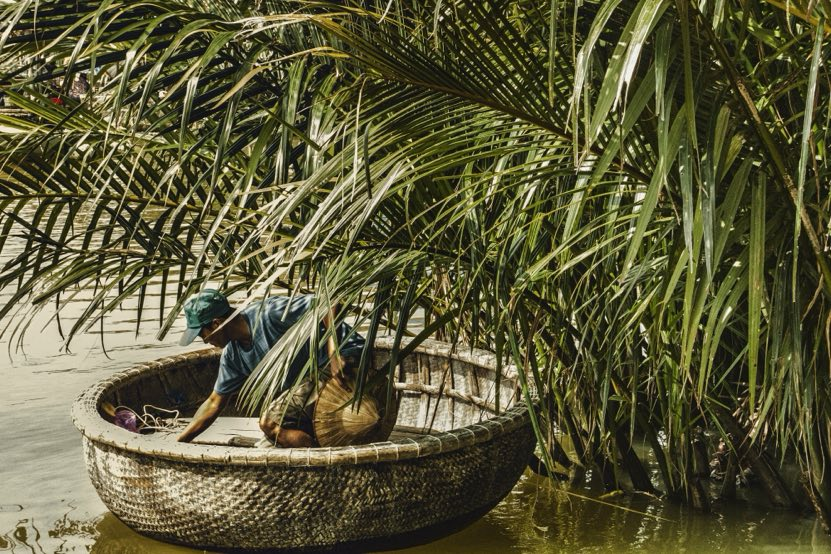

Living here
What Are the Best Day Trips From Da Nang?
Five trips out of the city, what each costs in 2026 and how long it takes to get there.
Bài viết này hiện chỉ có bản tiếng Anh. Menu và phần điều hướng đã chuyển sang tiếng Việt. Alice nói tiếng Việt và tiếng Anh, nhắn tin cho cô nếu bạn cần giải thích bằng tiếng Việt.
Key takeaways
- The 5 best day trips from Da Nang are Hue, the Hai Van Pass and Lang Co, My Son Sanctuary, the Cham Islands and the Than Tai hot springs.
- Hue is the biggest trip: about 2.5 to 4 hours by train over the Hai Van Pass, and 200,000 dong for the Imperial City. Many people stay a night.
- The Hai Van Pass is free, about 21 km long, and starts about 20 km north of the city. Ride it only if you are used to steep mountain roads.
- My Son costs 150,000 dong for foreign visitors and opens at 6am. Go early, before the tour buses and the heat.
- The Cham Islands are a March to August trip. Boats stop when the sea is rough, which is often from September to February.
What are the best day trips from Da Nang?
Hue for history, the Hai Van Pass for the view, My Son for ruins, the Cham Islands for clear water and the Than Tai hot springs for a rainy day. All five are within about 2.5 hours of the city, and three of them are inside Da Nang's own borders since the city merged with Quang Nam in July 2025. Ba Na Hills and Hoi An are closer still, and our guide to the top 5 places to visit in Da Nang covers them.
- Hue: the old imperial capital, over the pass by train. Best for history.
- The Hai Van Pass and Lang Co: the mountain road north, down to a lagoon. Best for the view.
- My Son Sanctuary: Cham temple ruins in a jungle valley. Best for an early start.
- The Cham Islands: a marine reserve off Hoi An. Best for snorkelling in summer.
- Than Tai hot springs: mineral pools and mud baths west of the city. Best for families and rainy days.

| Trip | Getting there | Ticket | Best time |
|---|---|---|---|
| Hue | Train, about 2.5 to 4 hours | 200,000 for the Imperial City | February to August |
| Hai Van Pass | Road north, the pass starts about 20 km out | Free | A clear morning |
| My Son | Road, 1 hour 15 to 1 hour 30 minutes | 150,000 for foreign visitors | At opening, from 6am |
| Cham Islands | Road to Cua Dai, then a speedboat | 70,000 plus a 20,000 island fee | March to August |
| Than Tai hot springs | Road west, 30 minutes to 1 hour | 490,000, children 245,000 | Any day, good when it rains |
Do the sea trip in summer and the hot springs in the rain. Hue and the pass work most of the year.
1. Hue: can you see it in a day from Da Nang?
You can, but it is a long day, and many people stay a night. Hue was Vietnam's imperial capital, and its walled Imperial City, royal tombs and the Perfume River are the reason to go. The Imperial City ticket costs 200,000 dong for adults, and combined tickets that add the tombs of Minh Mang, Tu Duc and Khai Dinh cost more.
Take the train for the journey itself. The line runs along the coast around the Hai Van Pass, and the trip takes about 2.5 to 4 hours depending on the train. Going north, sit on the right for the sea. By car, the Hai Van tunnel makes the road quicker but skips the view.
Hue's rainy season peaks in October and November, as in Da Nang, so plan it outside those months if you can. Our guide to the weather month by month has the seasons.
2. The Hai Van Pass: is it safe to ride?
For experienced riders, yes. The pass is the mountain road between Da Nang and Lang Co, about 21 km of bends that climb to roughly 496 m, with the sea below on one side. It starts about 20 km north of the centre, past Nam O, and the old Hai Van gate at the top is free to visit.
The road is steep and winding, with tight bends and fog near the top. If you have not ridden mountain roads before, go with a driver or an easy rider tour instead of renting a scooter. On the far side, the road drops to Lang Co, a strip of beach between the sea and the Lap An lagoon, a good place for a seafood lunch before you turn back.
Go on a clear morning. The pass is often in cloud, which is where its name, "sea cloud pass", comes from.
3. My Son Sanctuary: what time should you go?
At opening. My Son is a valley of Cham temple ruins, a UNESCO World Heritage Site, about 1 hour 15 minutes to 1 hour 30 minutes from the centre of Da Nang. The site opens at 6am and closes at 6pm, and the half day tours arrive mid morning, so the first hours are the coolest and quietest.
The ticket is 150,000 dong for foreign visitors and 100,000 for Vietnamese visitors, and it covers the electric shuttle into the valley. Wear shoes for uneven ground and bring water, since the valley traps the heat. It is a good pairing with a lunch in Hoi An on the way back, and our Da Nang or Hoi An guide covers that side of the city.
4. The Cham Islands: when can you go?
From about March to August, when the sea is calm. The Cham Islands, Cù Lao Chàm, are a protected marine reserve off the coast of Hoi An, reached by speedboat from Cua Dai. People go for the snorkelling, the quiet beaches and a seafood lunch in the island village.
The sightseeing fee is 70,000 dong, plus a 20,000 dong island sanitation fee, and the reserve is open from 7am to 4pm. The boats stop when the sea turns rough. That happens often from September to February, and in July 2026 a stretch of wind halted the boats in the middle of summer, so check the forecast and book with an operator who will refund a cancelled trip.
5. Than Tai hot springs: is it worth it?
On a rainy day or with children, yes. The Than Tai hot spring park sits in the hills west of the city, in Ba Na commune, between 30 minutes and an hour away by car. It has hot mineral pools and mud baths, and it is open from 8:30am to 5:30pm.
The adult ticket is 490,000 dong and children pay 245,000, which makes it one of the dearer trips here. Booking online is usually cheaper than the gate. It is the easiest of the five, with no long drive and no weather to plan around, which makes it a good choice in the rainy months. Our guide to living in Da Nang with kids has more for families.
How should you plan the five?
By season. Do the Cham Islands between March and August, when the boats run. Do the pass and My Son on dry, clear mornings, which are most common from about February to August. Save the hot springs for the rainy weeks of October and November, and plan Hue for a weekend with a night there.
- Start early. Every trip here is cooler and quieter before 9am.
- Carry cash. Small notes are easiest for tickets, parking and lunch.
- Check the weather on the day. Rain closes boat trips and turns the pass to cloud.
Where should you live to make the most of day trips?
It depends on which way you go most. Son Tra and the north of the city put you closest to Nam O, the pass and the road to Hue. Ngu Hanh Son, in the south, puts you closest to Hoi An, Cua Dai for the Cham Islands, and the road to My Son. My An sits in the middle, close to the beach and a short drive from either direction.
Our guide to where to live in Da Nang compares the main areas on rent, noise and flood risk.
Frequently asked questions
What are the best day trips from Da Nang?
Hue, the old imperial capital, the Hai Van Pass and Lang Co to the north, My Son Sanctuary's Cham temple ruins, the Cham Islands marine reserve off Hoi An, and the Than Tai hot spring park in the hills west of the city.
Can you do Hue as a day trip from Da Nang?
Yes, but it is a long day. The train takes about 2.5 to 4 hours each way over the Hai Van Pass, and the Imperial City alone takes a few hours. Many people stay one night.
How much does My Son Sanctuary cost?
150,000 dong for foreign visitors and 100,000 dong for Vietnamese visitors in 2026. The site is open from 6am to 6pm, and going at opening avoids the heat and the tour buses.
When can you visit the Cham Islands?
From about March to August, when the sea is calm. Boats from Cua Dai stop in rough weather, which is common from September to February. The fee is 70,000 dong plus a 20,000 dong island sanitation fee.
Is the Hai Van Pass free?
Yes. The road is free, and so is the old Hai Van gate at the top. The pass is about 21 km long and starts about 20 km north of the city centre.
How much is Than Tai hot spring park?
490,000 dong for adults and 245,000 dong for children in 2026, with online tickets often cheaper than the gate. The park is open from 8:30am to 5:30pm.